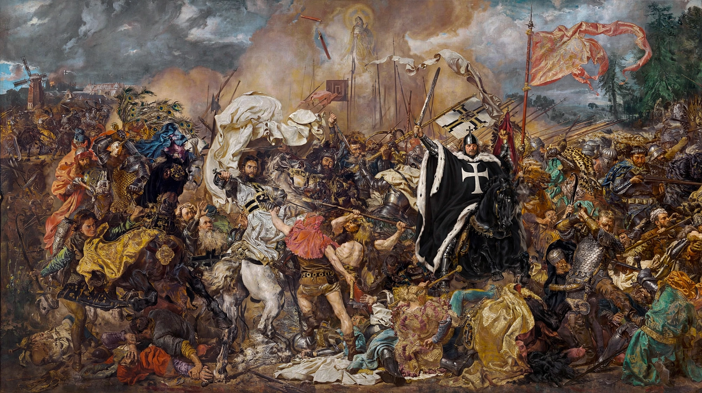

Battle of Grunwald
From Wikipedia, the free encyclopedia

The Battle of Grunwald, also known as the Battle of Tannenberg (or Žalgiris in Lithuanian), fought on 15 July 1410, was one of the largest battles of medieval Europe. The alliance of the Kingdom of Poland and the Grand Duchy of Lithuania, under King Władysław II Jagiełło and Grand Duke Vytautas, decisively defeated the Teutonic Order, ending its expansion and shifting the balance of power in Eastern Europe for centuries.
Background
The Teutonic Knights, invited into Prussia in the thirteenth century to crusade against pagan Balts, had built a monastic state that menaced Christian Poland and Lithuania after Lithuania's conversion (1386) removed the crusade's rationale. Tension over Samogitia and Danzig Pomerania brought war in 1409; the Order's Grand Master Ulrich von Jungingen sought a decisive battle in the summer of 1410.
The battle
Near the villages of Grunwald and Tannenberg in today's northern Poland, perhaps 40,000–60,000 men fought. After a feigned (or real) retreat of the Lithuanian wing drew the Knights out of position, Polish heavy cavalry broke the Order's battle; Jungingen and most of the Order's leadership were killed on the field. The allies took Marienburg's outskirts but failed to storm the great castle, limiting the strategic harvest.
Aftermath and memory
The Peace of Thorn (1411) returned Samogitia and imposed indemnities that broke the Order's finances; Polish-Lithuanian ascendancy followed, and the Order's Prussian branch was vassalised in 1466. Grunwald became a foundational national myth for Poles and Lithuanians — and a counter-myth for Germans, who named their 1914 victory 'Tannenberg' in revenge — celebrated in Matejko's colossal painting (1878) and at quincentenary re-enactments drawing tens of thousands.